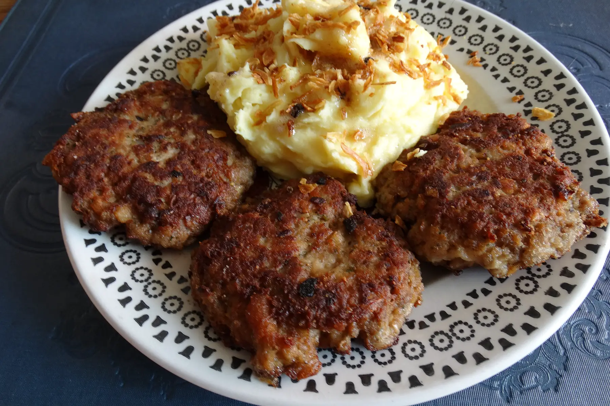
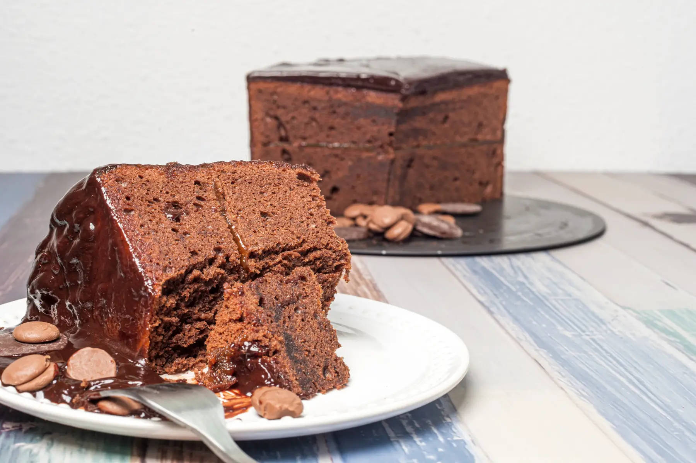
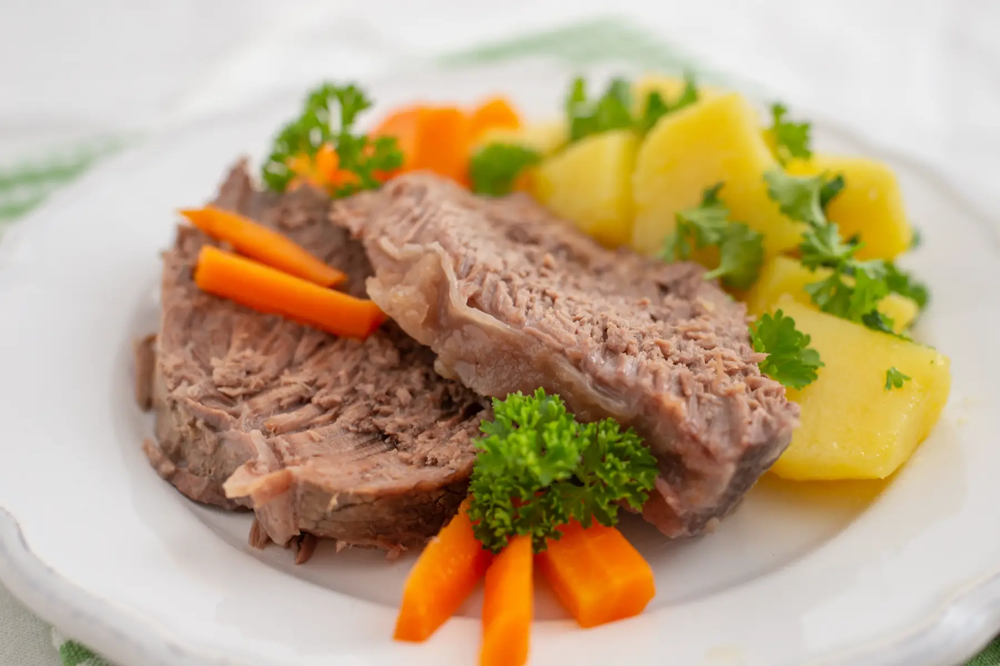

Imperial Delights!!
Erdäpfelgulasch (Potato Goulash)
Heat oil in a pot over medium heat. Add onions and cook until golden brown. Stir in garlic. Stir in sweet and smoked paprika, ensuring it doesn't burn. Add tomato paste and caraway seeds. Mix in the diced potatoes. Pour in stock to cover them and bring to a boil. Reduce the heat and simmer until potatoes are tender and the sauce thickens, about 25-30 minutes. Serve hot, garnished with sour cream if desired, and accompanied by crusty bread.
Ingredients:
Main Ingredients:
Recipe:
Fleischlaberln (Austrian Meat Patties)

In a large bowl, combine ground meat, onion, garlic, egg, breadcrumbs, mustard, marjoram, salt, and pepper. Mix well. Shape the mixture into equal-sized patties, about 1 inch thick. Heat oil in a skillet over medium heat. Fry the patties for 4-5 minutes on each side or until cooked through. Serve warm with mashed potatoes or a side salad.
Ingredients:
Main Ingredients:
Recipe:
Sachertorte (chocolate cake)

Cream butter and sugar until fluffy. Add yolks, one at a time. Stir in melted chocolate. Whisk egg whites with salt until stiff and fold into the mixture with flour. Preheat oven to 175°C (350°F). Pour batter into a greased pan and bake for 45-50 minutes. Cool completely. Heat jam and spread over the cake. Melt chocolate with cream and pour over the cake, smoothing it evenly. Let the glaze set before slicing. Serve with whipped cream.
Ingredients:
For the Cake:
For the Topping:
Recipe:
Erdäpfelgulasch (Potato Goulash)
Tafelsptiz (Austrian Boiled Beef)

Bring the beef stock to a simmer in a large pot. Add carrots, parsley root, leek, onion, bay leaf, peppercorns, and salt. Place the beef in the stock. Simmer gently for 2-3 hours until tender, skimming any foam or fat from the surface. Slice the beef and serve it with the broth, vegetables, and accompaniments. Garnish with chopped chives.
Ingredients:
Main Ingredients:
For the Accompaniments:
Recipe:
Viennese Apfelstrudel (Apple Strudel)

Mix flour and salt in a bowl. Add water, oil, and vinegar. Knead into a smooth dough. Cover and let rest for 1 hour. In a bowl, mix apples, sugar, cinnamon, raisins, lemon juice, and toasted breadcrumbs. On a floured surface, roll the dough as thin as possible. Use a cloth to stretch it further until almost transparent. Spread the filling over the dough, leaving a border. Roll the dough tightly using the cloth, sealing the edges. Place the strudel on a baking sheet. Brush with melted butter. Bake at 375°F (190°C) for 35-40 minutes until golden brown. Cool slightly, slice, and serve with powdered sugar or whipped cream.
Ingredients:
For the Dough:
For the Filling:
Recipe: